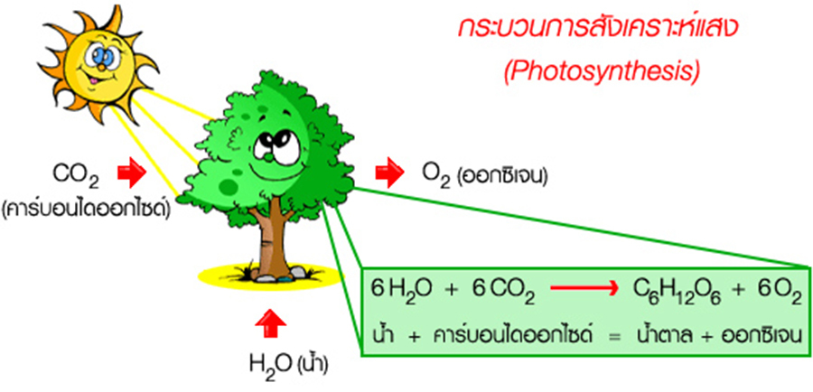
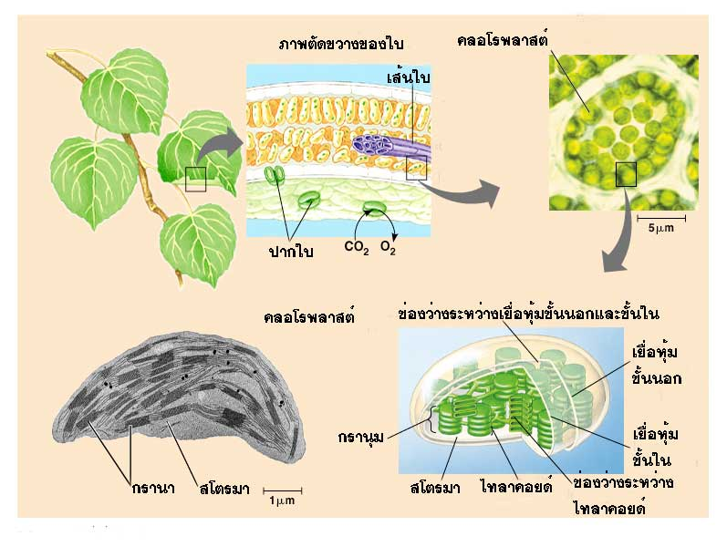
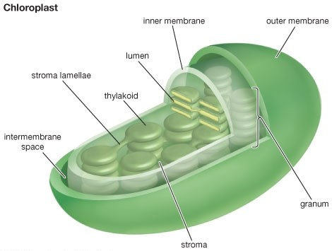
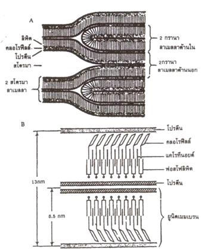
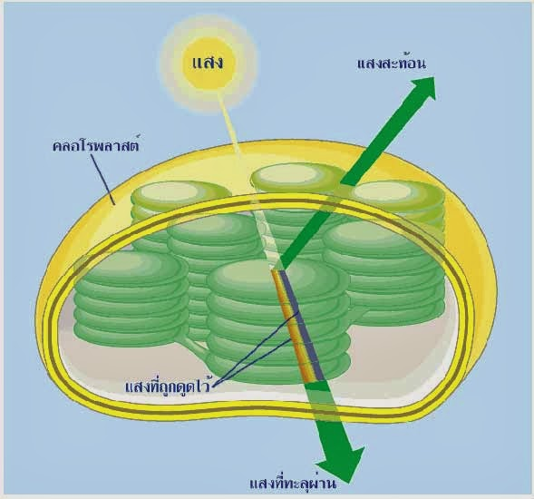
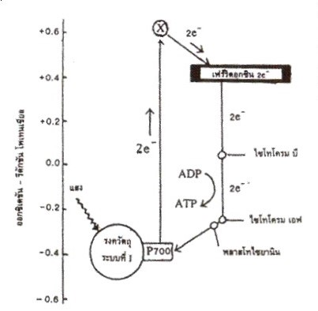
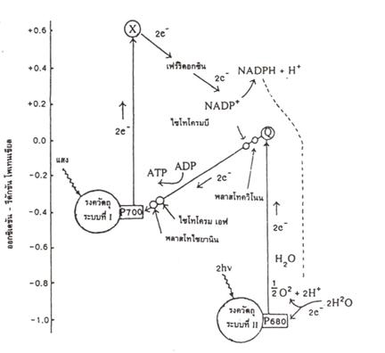
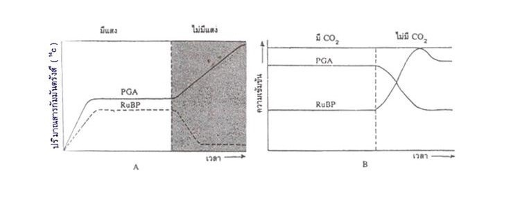
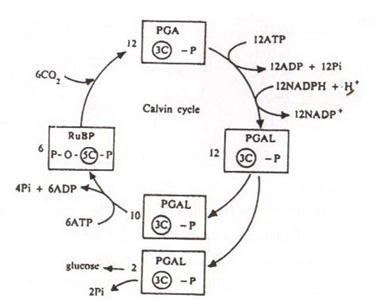
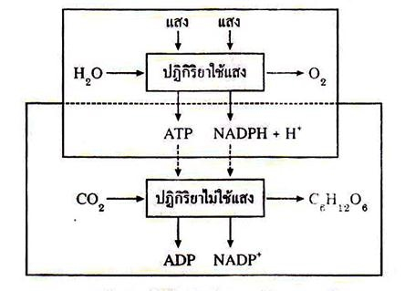

กระบวนการสังเคราะห์ด้วยแสง ( Photosynthesis )
เนื้อเยื่อพืช

รูปที่ 1 แสดงกระบวนการสังเคราะห์ด้วยแสง
เป็นการสร้างอาหารจำพวกคาร์โบไฮเดรตของพืชสีเขียวเพื่อใช้ในการเจริญเติบโตและซ่อมแซมส่วนที่สึกหรอของพืชอีกทั้งยังเป็นการผลิตอาหารสำหรับสิ่งมีชีวิตอื่นๆ บนโลกในพืชสีเขียวนั้นมีคลอโรฟิลล์ที่ทำหน้าที่ดูดกลืนพลังงานแสงจากดวงอาทิตย์มาใช้ในการสร้างอาหารนอกจากนั้น พืชยังจำเป็นต้องใช้น้ำและแก๊สคาร์บอนไดออกไซด์ที่เป็นสารอนินทรีย์โมเลกุลเล็กมาใช้ในกระบวนการสังเคราะห์ด้วยแสงอีกด้วย
1. ปฏิกิริยาการสังเคราะห์ด้วยแสง แบ่งเป็น 2 ชนิด
1.1 ปฏิกิริยาที่ต้องใช้แสง ( light reaction )
1.2 ปฏิกิริยาที่ไม่ต้องใช้แสง ( dark reaction )

รูปที่ 2 แสดงตำแหน่ง และองค์ประกอบของคลอโรพลาสต์ในพืช

รูปที่ 3 แสดงโครงสร้างของคลอโรพสาสต์
ออร์แกเนลล์ที่สำคัญของพืช คือ คลอโรพลาสต์ (chloroplast) เป็นแหล่งที่เกิดปฏิกิริยาการสังเคราะห์ด้วยแสง จากการศึกษาด้วยกล้องจุลทรรศน์อิเล็กตรอนและเทคนิคต่างๆทำให้ทราบลักษณะของคลอโรพลาสต์ โดยคลอโรพลาสต์ส่วนใหญ่จะมีรูปร่างกลมรี มีขนาดยาวประมาณ 5 ไมโครเมตร กว้าง 2 ไมโครเมตร และหนาประมาณ 1 – 2 ไมโครเมตร จำนวนแต่ละเซลล์มีไม่แน่นอน มีตั้งแต่สิบขึ้นไปจนถึงร้อยซึ่งขึ้นอยู่กับชนิดของพืช และชนิดของเซลล์พืช
คลอโรพลาสต์มีเยื่อหุ้ม 2 ชั้น เรียกว่า ยูนิกเมมเบรน ภายในเป็นของเหลวเรียกว่า สโตรมา( stroma ) เยื่อหุ้มชั้นในของคลอ-โรพลาสต์จะแผ่เข้าไปข้างในกลายเป็นโครงสร้างย่อยๆ ที่เป็นเยื่อบางๆ เรียกว่าลาเมลลา( lamella ) ลาเมลลาส่วนใหญ่จะมีลักษณะเป็นแผ่นกลมแบนบางๆ และเรียงซ้อนกันเป็นตั้งเรียกว่า กรานา ( grana ) ส่วนนี้จะหนากว่าส่วนอื่น ๆ แต่ละชั้นของกรานา เรียกว่า ไทลาคอยด์ ( thylakoid ) ในคลอโรพลาสต์เต็มไปด้วยกรานาที่กระจัดกระจายอยู่ทั่วไป
คลอโรพลาสต์ที่เจริญเต็มที่แล้วประกอบด้วยกรานา 40 - 60 กรานา ต่อ 1 คลอโรพลาสต์ ส่วนที่เชื่อมต่อระหว่างกรานา เรียกว่า อินเตอร์กรานา ( intergrana )หรือสโตรมาลาเมลลา ( stroma lamella )หรือสโตรมาไทลาคอยด์ ( stroma thylakoid ) ลาเมลลา ประกอบด้วยเยื่อหุ้ม 2 ชั้น ภายในบรรจุด้วยคลอโรฟิลล์ และแคโรทีนอยด์ ( carotenoids ) ทางผิวด้านหน้าของ ไทลาคอยด์จะมีรงควัตถุอยู่เป็นกลุ่มๆ อยู่ ทำให้มองดูมีลักษณะเป็นเม็ด ๆ เรียกว่า แกรนูล ( granule )แกรนูลมีทั้งขนาดเล็ก และใหญ่ สำหรับแกรนูลที่มีขนาดใหญ่ภายในมีกลุ่มของรงควัตถุระบบแสงที่ I ( Photosystem I ) หรือP 700 รับพลังงานแสงในช่วงคลื่น 700 นาโนเมตรได้ดี และรงควัตถุระบบแสงที่ II ( photosystem II ) หรือ P680 รับพลังงานแสงในช่วงคลื่น 680 นาโนเมตรได้ดี และระบบแสงทั้ง 2 ระบบนี้จะเรียกรวมกันว่า ควอนตาโซม ( quantasome ) ส่วนแกรนูลที่มีขนาดเล็กเข้าใจว่าเป็นที่อยู่ของเอนไซม์ที่เกี่ยวข้องกับการถ่ายทอดอิเล็กตรอนในปฏิกิริยาที่ต้องใช้แสง ส่วนในสโตรมาจะมีเอนไซม์ที่เกี่ยวข้องกับปฏิกิริยาที่ 2 คือ ปฏิกิริยาที่ไม่ต้องใช้แสง

รูปที่ 5 (A) แสดงตำแหน่งของสารโปรตีนคลอโรฟีลล์ และกรดไขมันในกรานา
(B) แสดงการเรียงกันของชั้นโปรตีน คลอโรฟีลล์ แคโรทีนอยด์ และฟอสดพลิพิด

รูปที่ 6 แสดงการดูดแสงสีต่าง ๆ ของคลอโรพลาสต์
ปัจจัยที่เกี่ยวข้องกับการเกิดปฏิกิริยาที่ต้องใช้แสง
1. สารสี ( Pigment ) แบ่งเป็น 2 ระบบ คือ สารสีระบบที่ 1 ( Pigment system I ) และสารสีระบบที่ 2 ( Pigment system II )
1.1 สารสีระบบที่ 1 ( Pigment system I ) ทำหน้าที่รับพลังงานแสง ซึ่งประกอบด้วยสารชนิดสำคัญ คือ คลอโรฟิลล์ เอ ชนิดรับแสงที่มีความยาวคลื่น 700 นาโนเมตรได้ดี พบในพืช และสาหร่ายทุกกลุ่ม สารสีระบบที่ 1 และตัวรับถ่ายทอดอิเล็กตรอนต่าง ๆ จะประกอบกันเป็นระบบแสงที่ 1 ( Photosystem I )
1.2 สารสีระบบที่ 2 ( Pigment system II ) ทำหน้าที่รับพลังงานแสง ซึ่งประกอบด้วยสารสี ดังนี้
- คลอโรฟิลล์ บี พบเฉพาะในพืช และสาหร่ายสีเขียว
- คลอโรฟิลล์ ซี พบเฉพาะในสาหร่ายสีน้ำตาล และสีน้ำตาล แกมเหลือง
- คลอโรฟิลล์ ดี พบเฉพาะในสาหร่ายสีแดง
- แคโรทีนอยด์ ( Carotenoids ) พบในพืช และสาหร่ายทุกกลุ่ม
- ไฟโคบิลิน ( Phycobilin )พบในสาหร่ายสีเขียวแกมน้ำเงินและสีแดง
สารสีระบบที่ 2 และตัวรับถ่ายทอดอิเล็กตรอนต่าง ๆ จะประกอบกันเป็นระบบแสงที่ 2 ( Photosystem II )
2. พลังงานแสงทำหน้าที่ ดังนี้
2.1 กระตุ้นให้อิเล็กตรอนของคลอโรฟิลล์มีพลังงานสูงขึ้น
2.2 แยกสารละลายน้ำในปฏิกิริยาที่เรียกว่า โฟโตไลซิส ( Photolysis ) ทำให้เกิดโปรตอน ( H + ) อิเล็กตรอน ( e- ) และ ออกซิเจน(O2)
2.3 ใช้สร้างสารอินทรีย์พลังงานสูง 2 ชนิด คือ ATP , NADPH + H+
3. น้ำ ( H2O ) น้ำจะถูกพืชนำไปสลายให้เป็นโปรตอน และอิเล็กตรอนเพื่อนำไปใช้สร้างน้ำตาลในปฏิกิริยาไม่ใช้แสง และมีผลทำให้เกิด O2 เป็นผลพลอยได้ปล่อยออกทางปากใบของพืช
4. ADP และ Pi ทำหน้าที่รับพลังงานที่ถ่ายทอดออกมาจากอิเล็กตรอนเกิดเป็น ATP
5. NADP+ เป็นสารทำหน้าที่รับโปรตอน และอิเล็กตรอนจากน้ำกลายเป็นสารอินทรีย์พลังงานสูง คือ NADPH + H+
สำหรับปฏิกิริยาที่ต้องใช้แสงจะมีบทบาทสำคัญเป็นอย่างยิ่ง เนื่องจากทำหน้าที่ในการเปลี่ยนพลังงานแสงให้เป็นพลังงานเคมี แล้วเก็บไว้ในสารประกอบ ATP และ NADPH2 เมื่อแสงส่องถูกคลอโรฟีลล์ พลังงานแสงบางส่วนจะถูกคลอโรฟีลล์ดูดซับเอาไว้ ทำให้อิเล็กตรอนภายในโมเลกุลของคลอโรฟีลล์มีพลังงานสูงขึ้น เรียกว่า excited electron และถ้ามีพลังงานแสงมากพอจะทำให้อิเล็กตรอนนี้หลุดออกจากคลอโรฟีลล์ อิเล็กตรอนที่หลุดออกมาอาจมีจำนวนมาก และจะถูกสารบางอย่างมารับแล้วถ่ายทอดอิเล็กตรอนนี้ไปเป็นทอด ๆ พลังงานภายในอิเล็กตรอนจะลดลงเรื่อย ๆ พลังงานที่ปล่อยออกมาจะถูกนำไปสร้างเป็น ATP หรือ NADPH + H+
การถ่ายทอดอิเล็กตรอนของคลอโรฟีลล์มี 2 ระบบ
1.การถ่ายทอดอิเล็กตรอนแบบเป็นวัฏจักร ( cyclic electron transfer )

รูปที่ 7 แสดงการถ่ายทอดอิเล็กตรอนแบบเป็นวัฏจักรของรงควัตถุ
เป็นการถ่ายทอดอิเล็กตรอนที่เกี่ยวข้องกับระบบแสงเพียงระบบเดียวเท่านั้น ซึ่งเรียกว่ารงควัตถุระบบที่ 1 ( pigment system I หรือ PSI ) อิเล็กตรอนที่หลุดออกจากรงควัตถุระบบที่ 1 จะถูกส่งไปยังสารตัวกลาง X ซึ่งยังไม่ทราบแน่ชัดว่าเป็นสารใด แต่เข้าใจว่าน่าจะเป็นเฟร์ริดอกซิน รีดิวซิงซับสแตนซ์ (ferredoxin – reducing substance ) แล้วสาร X จะถ่ายทอดอิเล็กตรอนต่อไปยัง เฟร์ริดอกซิน ( ferredoxin ) ไซโทรโครม บี ( cytochrome b ) ไซโทรโครม เอฟ ( cytochrome f ) และ พลาสโทไซยานิน ( plastocyanin ) ตามลำดับ จากนั้นอิเล็กตรอนนี้จะมีพลังงานปลดปล่อยออกมา และสามารถนำไปสร้าง ATP ได้
2 ATP ต่ออิเล็กตรอน 1 คู่
2.การถ่ายทอดอิเล็กตรอนแบบไม่เป็นวัฏจักร ( noncyclic electron transfer )

รูปที่ 8 แสดงการถ่ายทอดอิเล็กตรอนแบบไม่เป็นวัฏจักรของรงควัตถุระบบที่ I และระบบที่ II
การถ่ายทอดอิเล็กตรอนวิธีนี้ต้องใช้ระบบแสง 2 ระบบ คือ ระบบแสงที่ 1( photosystem Iหรือ PS I) และระบบแสงที่ 2 ( photosystem II หรือ PS II ) การถ่ายทอดอิเล็กตรอนวิธีนี้ต้องมีการสลายตัวของโมเลกุลน้ำ จึงเรียกได้อีกอย่างว่า กระบวนการ โฟโตไลซิส ( photolysis ) ซึ่งค้นพบโดยโรบิน ฮิลล์ ( Robin Hill ) ดังนั้นจึงอาจเรียกชื่อตามชื่อของผู้ค้นพบว่า ปฏิกิริยาฮิลล์ ( Hill reaction ) ปฏิกิริยานี้นอกจากมีการแตกตัวของโมเลกุลน้ำแล้วยังมีการสร้าง ATP และ NADPH + H+ ด้วยปฏิกิริยาเกิดขึ้นเป็นขั้น ๆ ดังนี้
1. รงควัตถุระบบแสงที่ 1 ( PS I ) และรงควัตถุระบบแสงที่ 2 ( PS II ) ได้รับการกระตุ้นจากแสงพร้อม ๆ กัน
2. รงควัตถุระบบแสงที่ 1 เมื่อได้รับพลังงานขึ้น ( จากพลังงานแสง ) จะหลุดออกจากคลอโรฟีลล์ และถูกต่อไปยังสาร X และเฟร์ริดอกซิตตามลำดับ จากนั้น NADP+ จะมารับอิเล็กตรอนเป็นตัวสุดท้าย ทำให้ระบบรงควัตถุที่ 1 ขาดอิเล็กตรอนไป 1คู่
3. โมเลกุลของน้ำแตกตัวเป็น2H+ และ 2OH- 2H2O 2H+ +2OH-
4. NADP+ ที่รับอิเล็กตรอนจาดรงควัตถุระบบแสงที่ 1 จะมารับ2H+ จาก โมเลกุลของน้ำเป็น NADPH
" +H+NADP+ + 2e- +2H+ NADPH + H+ "
5. 2OH- จะเกิดการเปลี่ยนแปลงทางเคมีจนเป็นน้ำ ออกซิเจน และ อิเล็กตรอน
6. 2e- จากโมเลกุลของน้ำนี้ถูกส่งไปยังรงควัตถุระบบที่ 2
7. 2e- จากรงควัตถุระบบแสงที่ 2 จะถูกส่งไปยัง ไซโทโครม Q พลาสโทคิวโนน ( plastoquinone ) ไซโทโครม บี แล้วมีการปลดปล่อยพลังงานออกมาสร้าง ATP แล้วจึงส่งต่อไปยังไซโทโครม เอฟพลาสโทไซยานิน และรงควัตถุระบบแสงที่ 2 ตามลำดับ
วีดีโอประกอบการศึกษาเพิ่มเติมเรื่อง ปฏิกิริยาที่ต้องใช้แสง ( light reaction )
1.2 ปฏิกิริยาที่ไม่ต้องใช้แสง ( dark reaction )
ปฏิกิริยาที่ไม่ต้องใช้แสงเป็นปฏิกิริยาที่เกิดภายในสโตรมาของคลอโรพลาสต์ โดยเป็นปฏิกิริยาเคมีล้วนๆ (Chemical reaction) โดยปฏิกิริยานี้ไม่ต้องการแสงสว่าง (ไม่มีแสงสว่างก็ได้ ) แต่ต้องการ ATP และ NADPH + (ซึ่งมีพลังงานศักดิ์สูงอยู่ในโมเลกุล) จากปฏิกิริยาที่ต้องใช้แสง โดยนำมาใช้การตรึงคาร์บอนไดออกไซด์ (ซึ่งมีพลังงานศักดิ์ในโมเลกุลต่ำในบรรยากาศให้เป็นคาร์โบไฮเดรต ซึ่งมีพลังงานศักดิ์อยู่ในโมเลกุลสูง ) ดังนั้น ปฏิกิริยานี้จึงเรียกได้อีกอย่างว่า ปฏิกิริยาการตรึงคาร์บอนไดออกไซด์ ( carbondioxide fixation ) สำหรับบุคคลแรกที่ใช้คำว่า dark reaction คือ เอฟ.เอฟ.แบลคแมน (F.F. Flack Man) เมื่อปี พ.ศ. 2448 (ค.ศ. 1905)

เหตุที่ได้กราฟออกมาดังนี้ เนื่องจากในขณะที่มีแสง PGA ถูกสร้างขึ้นจาก RuBP และ 14CO2 ได้ตลอดเวลา และ PGA บางส่วนก็สามารถเปลี่ยนไปเป็น RuBP ได้ แต่ในสภาพที่ไม่มีแสง RuBP สามารถรวมตัวกับ 14C2 แล้วสลายตัวเป็น PGA จึงมีมาก ทำให้ RuBP ลดจำนวนลงและ RuBP สร้างขึ้นใหม่ไม่ได้ เนื่องจากปฏิกิริยาที่ต้องใช้แสงไม่มีจึงไม่มี ATP และ NADPH + H+ มาใช้ในการเปลี่ยน PGA เป็น RuBP ในขณะที่มีแสงและมี 14C2 การสังเคราะห์ด้วยแสงเกิดได้ตามปกติ RuBP สามารถรวมตัวกับ 14C2 ได้ แล้วแตกตัวเป็น PGA ได้ในในขณะเดียวกัน PGA ส่วนหนึ่งก็สามารถสร้างกลับไปเป็น RuBP ได้ ดังนั้นปริมานของ PGA และ RuBP จึงคงที่ แต่เมื่อมีแสงและไม่มี 14C2 ปริมานของ PGA จะลดลงเนื่องจาก PGA สามารถเปลี่ยนเป็น RuBP ได้ เพราะยังคงมีปฏิกิริยาที่ใช้แสงอยู่ทำให้มี ATP และNADPH + H+ อยู่ตลอดเวลา PGA จึงรวมตัวกับ ATP และNADPH+ H+ เป็น RuBP เมื่อไม่มี14C2 ทำให้ RuBP ไม่ถูกใช้ไป RuBP จึงมีเพิ่มมากขึ้น PGA ไม่มีการสร้างเพิ่ม แต่ถูกใช้ไปเรื่อยๆปริมาณจึงลดลง
เมลวิน แคลวิน ( Melvin Calvin ) แอนดริว เอ.เบนสัน (Andrew A. Benson) และคณะแห่งมหาวิทยาลัยแคลิฟอร์เนีย ที่ เบริกเลย์ ได้ทดลองและศึกษาเกี่ยวกับปฏิกิริยาที่ไม่ต้องใช้แสงดังที่ได้กล่าวมาแล้ว นอกจากนั้นผลการทดลองยังพบอีกว่าปฏิกิริยาที่เกิดขึ้นนั้นเกิดเกิดขึ้นต่อเนื่องกันเป็นวงจรหรือวัฏจักร จึงเรียก วัฏจักรนี้ว่า วัฏจักรแคลวิน – เบนสัน (Calvin – Benson cycle) จากการศึกษาของแคลวินและเบนสัน ยังพบอีกว่าสารชนิดแรกที่อยู่ตัว ซึ่งเกิดขึ้นในปฏิกิริยา คือ กรดฟอสโฟกลีเซอริก (phosphoglyceric acid หรือ PGA) ปฏิกิริยาที่ไม่ใช้แสงมี 3ขั้นตอนใหญ่ๆ ตามลำดับ คือ

รูปที่ 10 แสดงวัฏจักรเเคลวิน
1. ปฏิกิริยาขั้นที่ 1
เป็นปฏิกิริยาการรวมตัวระหว่างคาร์บอนไดออกไซด์กับRuBP เกิดเป็นPGAขึ้น 2 โมเลกุล เรียกปฏิกิริยานี้ว่าคาร์บอกซิเลชัน ( Carboxylation ) ปฏิกิริยาจะใช้เอนไซม์รูบิสโก (Rubisco enzyme) หรือ RuBP Carboxylase เร่ง
เริ่มต้นด้วยสารตั้งต้น คือ RuBP ซึ่งเป็นน้ำตาลที่มีคาร์บอน 5 อะตอม และหมู่ฟอสเฟต 2 หมู่ จะเข้ารวมตัวกับ CO2 ได้เป็นสารประกอบใหม่ที่มีคาร์บอน 6 อะตอม (Keto-acid) แต่สารนี้จะไม่อยู่ตัวจะสลายไปเป็น PGA 2โมเลกุล ซึ่งแต่ละโมเลกุลของ PGA จะมีคาร์บอน 3 อะตอม และฟอสเฟต 1 หมู่ PGA นี้จึงถือว่าเป็นสารประกอบอินทรีย์ที่อยู่ตัวชนิดแรกในการตรึงคาร์บอนไดออกไซด์ ถ้าเริ่มจาก RuBP 6 โมเลกุล รวมตัวกับ CO2 6 โมเลกุล จะได้ PGA 12 โมเลกุล ดังสมการ 6RuBP + 6CO2 12PGAL
2. ปฏิกิริยาขั้นที่ 2
เป็นปฏิกิริยาที่มีการเปลี่ยนแปลง หรือมีการรีดิวซ์ (Reduce) PGA ให้เป็นPGAL (Phosphoglyceraldehyde) โดยอาศัยสารที่ให้พลังงานสูง ATP และตัวรีดิวซ์ (Reducer หรือ Reductant) คือ NADPH + H+ ที่ได้จากจากปฏิกิริยาที่ใช้แสง เรียกปฏิกิริยาขั้นตอนนี้ว่า รีดักชัน (Reduction) PGAL 1 โมเลกุล ประกอบด้วยคาร์บอน 3 อะตอม และฟอสเฟต 1 หมู่ ดังนั้นเมื่อเริ่มจาก PGA 12 โมเลกุลจึงได้เป็น PGAL 12 โมเลกุล ดังสมการ
12PGA + 12ATP + 12NADPH + H+ 12PGAL + 12ADP + 12Pi + 12NADP+
ข้อควรทราบพิเศษ : PGAL ที่เกิดขึ้นในปฏิกิริยานี้ ถือว่าเป็นน้ำตาลชนิดแรกสุดที่เป็นผลผลิตสำคัญของปฏิกิริยาที่ไม่ใช้แสง
3. ปฏิกิริยาขั้นที่ 3
เป็นปฏิกิริยาที่นำ PGAL 12 โมเลกุล ไปเปลี่ยนแปลงต่อไป 2 วิถีทาง คือ
1) PGAL 10 โมเลกุล จะเปลี่ยนไปเป็น RuBP 6 โมเลกุล ในการเปลี่ยนแปลงนี้จะต้องใช้
พลังงานจาก ATP ที่ได้จากปฏิกิริยาที่ใช้แสง และใช้หมู่ฟอสเฟตที่เกิดขึ้นจากการสลายตัวนี้อีก 2 หมู่ จึงเหลือหมู่ฟอสเฟตที่ได้จากการสลายตัวของ ATP เพียง 4 หมู่ ดังสมการ
10PGAL + 6ATP 6RuBP + 6ADP + 4Pi
ปฏิกิริยาการสร้าง RuBP ขึ้นมาอีกครั้งหนึ่งจาก PGAL เพื่อที่จะทำให้วัฏจักรสามารถเกิดขึ้นได้ต่อไป เรียกปฏิกิริยาขั้นนี้ว่า รีเจเนอเรชัน (Regeneration)
2) PGAL ที่เหลือ 2 โมเลกุล อาจนำไปใช้เปลี่ยนเป็นน้ำตาลกลูโคสและแป้งตามลำดับ เพื่อที่จะนำไปในกระบวนการเมแทบอลิซึมหรือเก็บสะสมไว้ การสร้างน้ำตาลกลูโคส หรือแป้งจาก PGAL เรียกว่า การสังเคราะห์ (Synthesis)

รูปที่ 11 แสดงปฏิกิริยาการสังเคราะห์ด้วยแสงของพืช
วีดีโอประกอบการศึกษาเพิ่มเติมเรื่อง ปฏิกิริยาที่ไม่ต้องใช้แสง ( dark reaction )
PGAL ถูกใช้ในหลายกิจกรรม คือ
1. สร้างเป็น RuBP ซึ่งเป็นสารตัวกลางในวัฏจักรแคลวิน
2. ใช้เป็นสารตัวกลางในกระบวนการหายใจโดยเข้าในช่วงไกลไคไลซิส ซึ่งจะเข้าวัฏจักรเครบส์ และระบบถ่ายอิเล็ดตรอนต่อไป
3. ถูกส่งไปยังเซลล์ข้างเคียงเพื่อกิจกรรมต่างๆ
4. สร้างเป็นสารที่มีโมเลกุลใหญ่ขึ้น เช่น กลูโคส แป้ง เซลลูโลส เพกทินหรือไขมันต่อไป
จากปฏิกิริยาขั้นที่ 1 จนถึงปฏิกิริยาขั้นที่ 3 เมื่อรวมสมการจะได้สมการรวม ดังนี้
6CO2 + 18ATP + 12NADPH + H+ C6H12O6 + 18Pi + 12NADP+ + 6H2O
สำหรับปฏิกิริยาการสังเคราะห์ด้วยแสงที่สมบูรณ์ คือ
6CO2 + 12H2O (มีแสง+ มีคลอโรฟิล ) C6H12O6 + 6O2 + 6H2O
ปัจจัยที่ควบคุมการสังเคราะห์แสง
ปัจจัยที่ควบคุมการสังเคราะห์แสงสามารถแบ่งได้เป็นปัจจัยภายในและปัจจัยภายนอก ซึ่งปัจจัยภายในจะเกี่ยวข้องกับผลของพันธุกรรมของพืช และปัจจัยภายนอกเป็นปัจจัยที่เกี่ยวข้องกับสภาพแวดล้อม
1. ปัจจัยภายใน
1.1 โครงสร้างของใบ
การเข้าสู่ใบของคาร์บอนไดออกไซด์จะยากง่ายไม่เท่ากัน ทั้งนี้ขึ้นอยู่กับขนาดและจำนวน ตลอดจนตำแหน่งของปากใบ ซึ่งอยู่แตกต่างกันในพืชแต่ละชนิด นอกจากนั้นปริมาณของช่องว่างระหว่างเซลล์ซึ่งเกิดจากการเรียงตัวของเนื้อเยื่อ เมโซ ฟิลล์ (Mesophyll) ของใบยังมีผลต่อการแลกเปลี่ยนคาร์บอนไดออกไซด์ด้วย ความหนาของชั้นคิวติเคิลอ เซลล์-ผิว(Epidermis) และขนของใบจะมีผลในการทำให้คาร์บอนไดออกไซด์กระจายเข้าสู่ใบได้ไม่เท่ากันเพราะถ้าหนาเกินไปแสงจะตกกระทบกับคลอโรพลาสต์ได้น้อยลง
1.2 อายุของใบ
เมื่อพิจารณาถึงใบแต่ละใบของพืช จะพบว่าใบอ่อนสามารถสังเคราะห์แสงได้สูงจนถึงจุดที่ใบแก่ แต่หลังจากนั้น การสังเคราะห์แสงจะลดลงเมื่อใบแก่และเสื่อมสภาพใบเหลืองจะไม่สามารถสังเคราะห์แสงได้ เพราะไม่มีคลอโรฟิลล์
1.3 การเคลื่อนย้ายคาร์โบไฮเดรต
โดยทั่วไปน้ำตาลซูโครสจะเคลื่อนย้ายจาก Source ไปสู่ Sink ดังนั้นมักพบเสมอว่าเมื่อเอาส่วนหัวเมล็ด หรือผลที่กำลังเจริญเติบโตออกไปจากต้นจะทำให้การสังเคราะห์แสงลดลงไป 2-3 วัน เพราะว่าน้ำตาลจากใบไม่สามารถเคลื่อนย้ายได้ พืชที่มีอัตราการสังเคราะห์แสงสูง จะมีการเคลื่อนย้ายน้ำตาลได้สูงด้วย การที่ใบเป็นโรคจะทำให้พืชสังเคราะห์แสงได้ลดลง เพราะว่าใบกลายสภาพเป็น Sink มากกว่า Source แต่ใบที่อยู่ใกล้กันแต่ไม่เป็นโรคจะมีอัตราการสังเคราะห์แสงเพิ่มขึ้น อย่างไรก็ตามการเพิ่ม Sink ให้กับต้น เช่นเพิ่มจำนวนฝักของข้าวโพด เพิ่มจำนวนผลที่ติด เพิ่มจำนวนหัว จะทำให้การสังเคราะห์แสงเพิ่มขึ้น
1.4 โปรโตพลาสต์
อัตราการสังเคราะห์แสงจะมีความสัมพันธ์กับการทำงานของโปรโตพลาสต์มาก เมื่อพืชขาดน้ำสภาพคอลลอยด์ของโปรโตพลาสต์จะอยู่ในสภาพขาดน้ำด้วยทำให้เอนไซม์ที่ เกี่ยวข้องกับการสังเคราะห์แสงทำงานได้ไม่เต็มที่ แต่พืชแต่ละชนิดโปรโตพลาสต์จะปรับตัวให้ทำงานได้ดีไม่เท่ากัน ทำให้อัตราการสังเคราะห์แสงเปลี่ยนไปไม่เท่ากัน
2 ปัจจัยภายนอก
2.1. ปริมาณของ CO2 ปกติจะมีเท่ากับ 0.03 เปอร์เซ็นต์ การสังเคราะห์แสงจะเพิ่มขึ้นเมื่อปริมาณของ CO2 ในบรรยากาศเพิ่มขึ้น ยกเว้นเมื่อปากใบปิดเพราะการขาดน้ำ ความแตกต่างระหว่างพืช C3 และ C4 ในแง่ของ CO2คือ ถ้าปริมาณของ CO2 ลดลงต่ำกว่าสภาพบรรยากาศปกติแต่แสงยังอยู่ในระดับความเข้มเหนือจุด Light Compensation พบว่า พืช C3 จะมีการสังเคราะห์แสง เป็น 0 ถ้ามีความเข้มข้นของ CO2 50-100 ส่วนต่อล้าน แต่พืช C4 จะยังคงสังเคราะห์แสงได้ต่อไป แม้ CO2 จะต่ำเพียง 0-5 ส่วนต่อล้านก็ตามความเข้มข้นของ CO2 ที่จุดซึ่งอัตราการสังเคราะห์แสงเท่ากับอัตราการหายใจเรียกว่า CO2 Compensation Point ข้าวโพดมี CO2 Compensation Point อยู่ที่ 0 ส่วนต่อล้าน ในขณะที่ทานตะวันมีค่าถึง 50 ส่วนต่อล้าน
การเพิ่มความเข้มข้นของคาร์บอนไดออกไซด์ให้สูงขึ้นไปเรื่อย ๆ จะมีผลทำให้เกิดการสังเคราะห์แสงได้มากขึ้น แต่เมื่อเพิ่มขึ้นสูงถึง 0.5 เปอร์เซ็นต์ พืชจะมีการสังเคราะห์แสงได้มากขึ้น แต่พืชจะทนได้ระยะหนึ่ง คือประมาณ 10-15 วัน หลังจากนั้นพืชจะชะงักการเจริญเติบโต
โดยทั่วไปพืช C4 จะทนต่อความเข้มข้นของคาร์บอนไดออกไซด์ได้ดีกว่าพืช C3
2.2. ความเข้มของแสง ใบของพืช C4 ตอบสนองต่อความเข้มของแสงเป็นเส้นตรงคือเมื่อเพิ่มความเข้มของแสง อัตราการสังเคราะห์แสงจะเพิ่มขึ้น โดยทั่วไปยอดของพืช C4 จะได้รับแสงมากกว่าใบล่าง ดังนั้นใบยอดอาจจะได้รับแสงจนถึงจุดอิ่มตัวได้ ในขณะที่ใบล่างจะไม่ได้รับแสงจนถึงจุดอิ่มตัวเพราะถูกใบยอดบังแสงไว้ แต่เมื่อพิจารณาพืชทั้งต้นหรือทั้งป่า จะพบว่าพืชไม่ได้รับแสงถึงจุดที่จะทำให้การสังเคราะห์แสงสูงสุดเพราะมีการบังแสงกันภายในทรงพุ่ม ส่วนคุณภาพของแสงนั้นแสงที่มีความยาวคลื่นช่วง 400-700 nm เหมาะสมที่สุด
ความเข้มของแสง หรือปริมาณพลังงานแสงต่อหนึ่งหน่วยพื้นที่ ซึ่งมีหน่วยเป็นลักซ์ (Lux) (10.76 lux = 1 ft-c) ในแต่ละท้องที่จะมีความเข้มของแสงไม่เท่ากัน ซึ่งทำให้พืชมีการปรับตัวทางพันธุกรรมต่างกัน การสังเคราะห์แสงของพืชโดยทั่วไปจะดีขึ้นเมื่อพืชได้รับความเข้มของแสงมากขึ้น เมื่อพืชได้รับความเข้มของแสงต่ำกว่าที่พืชต้องการพืชจะมีอัตราการสังเคราะห์แสงต่ำลง แต่อัตราการหายใจของพืชจะเท่าเดิม เมื่ออัตราการสังเคราะห์แสงลดต่ำลง จนทำให้อัตราการสร้างอาหารเท่ากับอัตราการใช้อาหารจากการหายใจ ในกรณีนี้จำนวนคาร์บอนไดออกไซด์ที่ตรึงไว้จะเท่ากับจำนวนคาร์บอนไดออกไซด์ที่ปล่อยออกมา ที่จุดนี้การแลกเปลี่ยนก๊าซมีค่าเป็นศูนย์ เป็นจุดซึ่งเรียกว่าLight หรือ CO2 Compensation point ซึ่งพืชจะไม่เจริญเติบโตแต่สามารถมีชีวิตอยู่ได้ ถ้าความเข้มของแสงต่ำลงกว่านี้อีกพืชจะขาดอาหารทำให้ตายไปในที่สุด แต่การเพิ่มความเข้มของแสงมากขึ้นไม่ได้ทำให้อัตราการสังเคราะห์แสงสูงเสมอไปเพราะพืชมีจุดอิ่มตัวแสง ซึ่งถ้าหากความเข้มของแสงเพิ่มไปอีกจะทำให้พืชใบไหม้ ซึ่งปกติพืช C4 จะมีประสิทธิภาพในการใช้แสงดีกว่าพืช C3
ความยาวของช่วงที่ได้รับแสง (Light Duration) เมื่อช่วงเวลาที่ได้รับแสงยาวนานขึ้น อัตราการสังเคราะห์แสงจะเพิ่มขึ้นด้วย โดยเป็นสัดส่วนโดยตรงกับความยาวของวัน ดังนั้นการเร่งการเจริญเติบโตของพืชในเขตหนาวซึ่งในช่วงฤดูหนาวจะมีวันที่สั้นจึงจำเป็นต้องให้แสงเพิ่มกับพืชที่ปลูกในเรือนกระจก
คุณภาพของแสง (Light quality) แสงแต่ละสีจะมีคุณภาพหรือขนาดของโฟตอนหรือพลังงานที่ไม่เท่ากัน จึงทำให้เกิดจากเคลื่อนย้ายอีเลคตรอนได้ไม่เท่ากัน ขนาดของโฟตอนจะต้องพอดีกับโครงสร้างของโมเลกุลของคลอโรฟิลล์ ถ้าหากไม่พอดีกันจะต้องมี Accessory pigment มาช่วยรับแสง โดยมีลักษณะเป็นแผงรับพลังงาน (Antenna system) แล้วส่งพลังงานต่อไปให้คลอโรฟิลล์เอ ดังกล่าวมาแล้ว ในสภาพธรรมชาติ เช่น ในป่าหรือท้องทะเลลึก แสงที่พืชสามารถใช้ประโยชน์ในการสังเคราะห์แสงได้มักจะถูกกรองเอาไว้โดยต้นไม้ที่สูงกว่าหรือแสงดังกล่าวไม่สามารถส่องลงไปถึง พืชเหล่านี้มักจะได้รับแสงสีเขียวเท่านั้น พืชเหล่านี้หลายชนิดจะพัฒนาระบบให้มีรงควัตถุซึ่งสามารถนำเอาพลังงานจากแสงสีเขียวมาใช้ประโยชน์ได้
2.3. อุณหภูมิ ช่วงอุณหภูมิที่พืชสังเคราะห์แสงได้ค่อนข้างกว้าง เช่น แบคทีเรีย และสาหร่ายสีน้ำเงินแกมเขียว สามารถสังเคราะห์แสงได้ที่อุณหภูมิ 70 องศาเซลเซียส ในขณะที่พืชตระกูลสนสามารถสังเคราะห์แสงได้อย่างช้ามากที่อุณหภูมิ –6 องศาเซลเซียส พืชในเขตแอนตาร์คติกบางชนิด สามารถสังเคราะห์แสงได้ที่อุณหภูมิ –18 องศาเซลเซียส และอุณหภูมิเหมาะสมในการสังเคราะห์แสงเท่ากับ 0 องศาเซลเซียส ใบของพืชชั้นสูงทั่ว ๆ ไป อาจจะมีอุณหภูมิสูงถึง 35 องศาเซลเซียส ในขณะได้รับแสง แต่การสังเคราะห์แสงก็ยังดำเนินต่อไปได้ ผลของอุณหภูมิต่อการสังเคราะห์แสงจึงขึ้นกับชนิดของพืชและสภาพแวดล้อมที่พืชเจริญเติบโต เช่น พืชทะเลทราย จะมีอุณหภูมิเหมาะสมสูงกว่าพืชในเขตอาร์คติก พืชที่เจริญได้ดีในเขตอุณหภูมิสูง เช่น ข้าวโพด ข้าวฟ่าง ฝ้าย และถั่วเหลืองจะมีอุณหภูมิที่เหมาะสมสูงกว่าพืชที่เจริญได้ดีในเขตอุณหภูมิต่ำ เช่น มันฝรั่ง ข้าวสาลี และข้าวโอ๊ต โดยทั่วไปอุณหภูมิเหมาะสมในการสังเคราะห์แสงของพืชแต่ละชนิดจะใกล้เคียงกับอุณหภูมิของสภาพแวดล้อมตอนกลางวันในเขตนั้น ๆ ตามปกติพืช C4 จะมีอุณหภูมิเหมาะสมต่อการสังเคราะห์แสงสูงกว่าพืช C3 ค่า Q10 ของการสังเคราะห์แสงประมาณ 2-3 และอุณหภูมิจะมีผลกระทบต่อ Light Reaction น้อยมาก เมื่อเทียบกับ Enzymatic Reaction
2.4. น้ำ จะเกี่ยวข้องกับการปิดเปิดของปากใบ และเกี่ยวข้องกับการให้อีเลคตรอนเมื่อเกิดสภาวะขาดแคลนน้ำ พืชจะคายน้ำได้เร็วว่าการดูดน้ำและลำเลียงน้ำของราก ทำให้ต้นไม้สูญเสียน้ำอย่างรวดเร็ว ทำให้การทำงานของเอนไซม์ต่าง ๆ ผิดปกติ และต่อมาปากใบจะปิด การขาดแคลนน้ำที่ต่ำกว่า 15 เปอร์เซ็นต์ อาจจะยังไม่มีผลกระทบกระเทือนต่ออัตราการสังเคราะห์แสงมากนัก แต่ถ้าเกิดสภาวะขาดแคลนถึง 15 เปอร์เซ็นต์แล้วจะทำให้ปากใบปิดจึงรับคาร์บอนไดออกไซด์ไม่ได้
2.5. ธาตุอาหาร เนื่องจากคลอโรฟิลล์มีแมกนีเซียมและไนโตรเจนเป็นธาตุที่อยู่ในโมเลกุลด้วย ดังนั้นหากมีการขาดธาตุทั้งสองจะทำให้การสังเคราะห์แสงลดลง